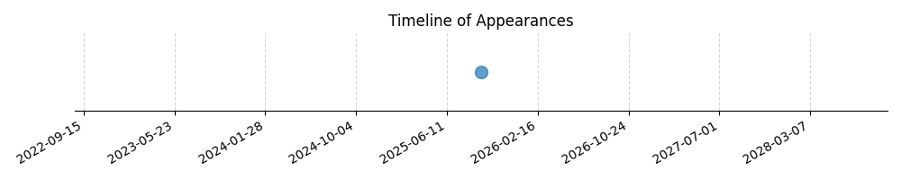

Kategorie: Letecké předpisy
Tato otázka se týká požadavků na kvalifikaci pilota pro přepravu další osoby na palubě malého letadla (SLZ - sportovní létající zařízení). Správná odpověď B odkazuje na platné předpisy pro udržení způsobilosti pilota, které vyžadují minimálně 3 vzlety a přistání za posledních 90 dní na typu letadla, se kterým má být let proveden, aby mohl přepravovat další osobu. Toto pravidlo zajišťuje, že pilot má aktuální praxi s daným typem letadla.

| Datum výskytu |
|---|
| 2025-09-13 |